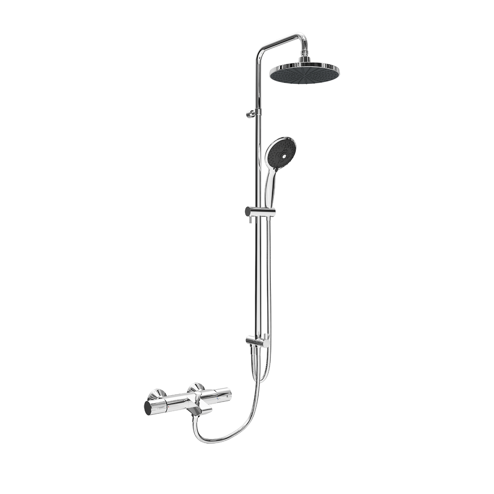
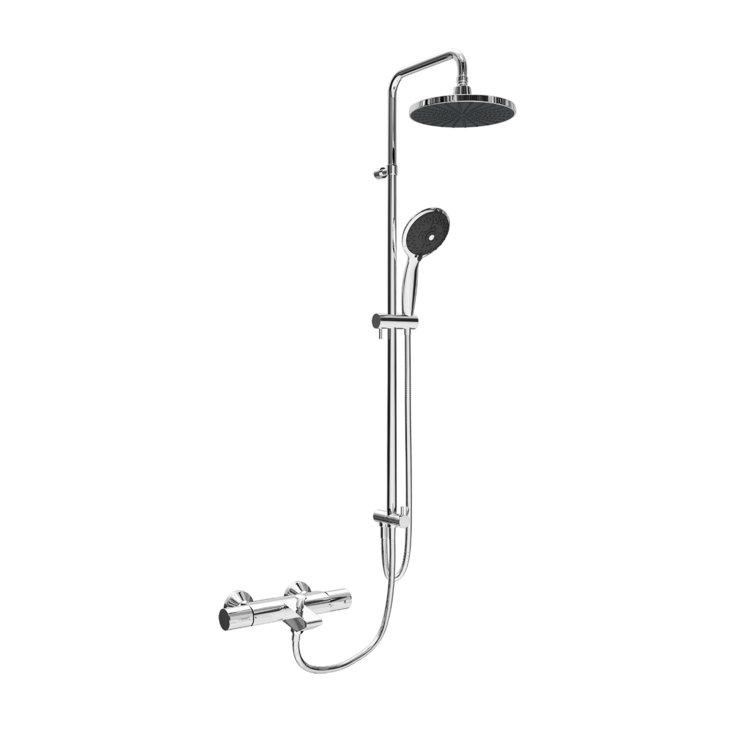
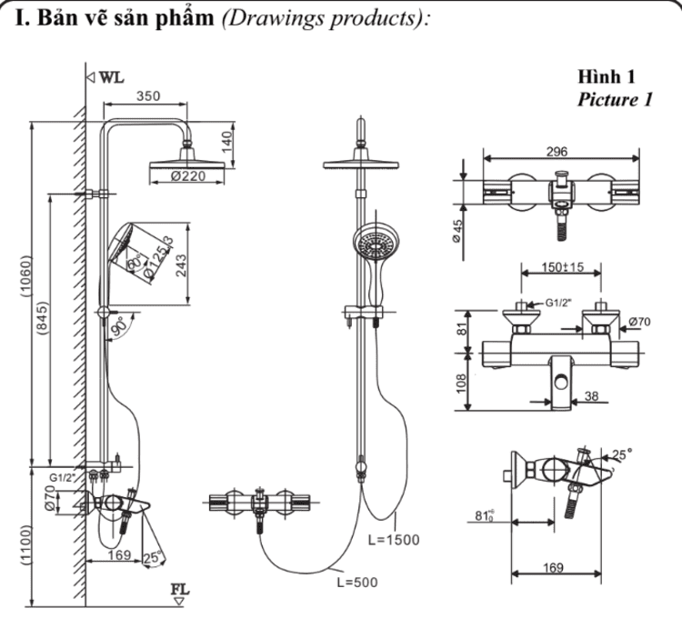

Đến từ thương hiệu thiết bị vệ sinh INAX, sen tắm nhiệt độ BFV-6015S là sự kết hợp hoàn hảo giữa công nghệ trộn nhiệt tiên tiến và bộ phụ kiện sen cây cao cấp, hướng đến trải nghiệm tắm sảng khoái và an tâm nhất cho gia đình bạn.Công nghệ trộn nhiệt tự động và an toàn tối ưuChống bỏng thông minh: BFV-6015S tích hợp công nghệ trộn nhiệt tự động hiện đại, giúp duy trì mức nhiệt ổn định ở 38°C và đảm bảo nước không bao giờ nóng quá 49°C.Bảo vệ trẻ nhỏ: Tốc độ điều chỉnh nước nhanh chóng cùng tính năng chống bỏng giúp mẫu sen này trở nên phù hợp với các gia đình quan tâm đến sự an toàn của trẻ nhỏ.Tiết kiệm tài nguyên: Tay vặn vòi được thiết kế tối ưu giúp tiết kiệm nước và đĩa Cartridge bền bỉ bên trong hỗ trợ ngăn chặn rò rỉ, tiết kiệm năng lượng hiệu quả.Trải nghiệm cá nhân hóa với tay sen 3C5 chế độ phun đa dạng: Tay sen 3C đi kèm cho phép người dùng tùy chỉnh trải nghiệm tắm theo nhu cầu: chế độ phun mát-xa thư giãn sau ngày làm việc mệt mỏi, phun sương hỗ trợ tẩy trang nhẹ nhàng, và chế độ phun mưa cho nhu cầu tắm thường.Bát sen phun đều: Bát sen tắm BFV-6015S được thiết kế đặc biệt giúp cho các tia nước phun ra đồng đều, bao phủ trọn vẹn cơ thể mang lại cảm giác dễ chịu.Thiết kế mẫu mới: BFV-6015S là mẫu sen tắm thiết kế mới với tính năng có thể dễ dàng điều chỉnh độ cao của vòi để phù hợp với vóc dáng của từng thành viên trong gia đình.Chất lượng bền bỉ và an toàn sức khỏeVòi nước được sản xuất với hàm lượng chì thấp, đảm bảo an toàn tuyệt đối cho nguồn nước sinh hoạt.Bề mặt BFV-6015S được bảo vệ bởi lớp mạ Crom/Niken chất lượng cao, mang lại vẻ sáng bóng sang trọng và khả năng chống ăn mòn bền vững với thời gian.Với thiết kế hướng đến người dùng, sen cây BFV-6015S cực kỳ dễ dàng và tiện lợi trong mọi thao tác sử dụng hàng ngày.BFV-6015S hoạt động hiệu quả trong dải áp lực từ 0.15MPa đến 0.75MPa, đảm bảo dòng chảy mạnh mẽ và ổn định.Video giới thiệu sen tắm INAXBản vẽ sen tắm nhiệt độ BFV-6015SChi tiết cách lắp đặt và sử dụng BFV-6015S.Thông số kỹ thuậtChất liệuĐồng mạ Niken/CromLoạiSen cây tắm nhiệt độKích thước-Thiết kếTay sen 3C với 5 chế độ phunThương hiệuINAXTính năng- Trộn nhiệt tự động, duy trì 38°C ổn định - Cơ chế chống bỏng an toàn tuyệt đối cho trẻ em và người già - Thân sen có thể điều chỉnh độ cao linh hoạt theo người sử dụngÁp lực nước0.15 MPa - 0.75 MPaKhác- Hotline tư vấn và bảo hành: 18006633
Sen tắm nhiệt độ BFV-6015S
Vòi chậu thương hiệu INAX.
Đã cập nhật danh sách yêu thích.
DANH MỤC: Vòi chậu
MÃ SẢN PHẨM: BFV-6015S
DEPTH: mm
HEIGHT: mm
WIDTH: mm
Đến từ thương hiệu thiết bị vệ sinh INAX, sen tắm nhiệt độ BFV-6015S là sự kết hợp hoàn hảo giữa công nghệ trộn nhiệt tiên tiến và bộ phụ kiện sen cây cao cấp, hướng đến trải nghiệm tắm sảng khoái và an tâm nhất cho gia đình bạn.Công nghệ trộn nhiệt tự động và an toàn tối ưuChống bỏng thông minh: BFV-6015S tích hợp công nghệ trộn nhiệt tự động hiện đại, giúp duy trì mức nhiệt ổn định ở 38°C và đảm bảo nước không bao giờ nóng quá 49°C.Bảo vệ trẻ nhỏ: Tốc độ điều chỉnh nước nhanh chóng cùng tính năng chống bỏng giúp mẫu sen này trở nên phù hợp với các gia đình quan tâm đến sự an toàn của trẻ nhỏ.Tiết kiệm tài nguyên: Tay vặn vòi được thiết kế tối ưu giúp tiết kiệm nước và đĩa Cartridge bền bỉ bên trong hỗ trợ ngăn chặn rò rỉ, tiết kiệm năng lượng hiệu quả.Trải nghiệm cá nhân hóa với tay sen 3C5 chế độ phun đa dạng: Tay sen 3C đi kèm cho phép người dùng tùy chỉnh trải nghiệm tắm theo nhu cầu: chế độ phun mát-xa thư giãn sau ngày làm việc mệt mỏi, phun sương hỗ trợ tẩy trang nhẹ nhàng, và chế độ phun mưa cho nhu cầu tắm thường.Bát sen phun đều: Bát sen tắm BFV-6015S được thiết kế đặc biệt giúp cho các tia nước phun ra đồng đều, bao phủ trọn vẹn cơ thể mang lại cảm giác dễ chịu.Thiết kế mẫu mới: BFV-6015S là mẫu sen tắm thiết kế mới với tính năng có thể dễ dàng điều chỉnh độ cao của vòi để phù hợp với vóc dáng của từng thành viên trong gia đình.Chất lượng bền bỉ và an toàn sức khỏeVòi nước được sản xuất với hàm lượng chì thấp, đảm bảo an toàn tuyệt đối cho nguồn nước sinh hoạt.Bề mặt BFV-6015S được bảo vệ bởi lớp mạ Crom/Niken chất lượng cao, mang lại vẻ sáng bóng sang trọng và khả năng chống ăn mòn bền vững với thời gian.Với thiết kế hướng đến người dùng, sen cây BFV-6015S cực kỳ dễ dàng và tiện lợi trong mọi thao tác sử dụng hàng ngày.BFV-6015S hoạt động hiệu quả trong dải áp lực từ 0.15MPa đến 0.75MPa, đảm bảo dòng chảy mạnh mẽ và ổn định.Video giới thiệu sen tắm INAXBản vẽ sen tắm nhiệt độ BFV-6015SChi tiết cách lắp đặt và sử dụng BFV-6015S.Thông số kỹ thuậtChất liệuĐồng mạ Niken/CromLoạiSen cây tắm nhiệt độKích thước-Thiết kếTay sen 3C với 5 chế độ phunThương hiệuINAXTính năng- Trộn nhiệt tự động, duy trì 38°C ổn định - Cơ chế chống bỏng an toàn tuyệt đối cho trẻ em và người già - Thân sen có thể điều chỉnh độ cao linh hoạt theo người sử dụngÁp lực nước0.15 MPa - 0.75 MPaKhác- Hotline tư vấn và bảo hành: 18006633
DANH MỤC: Vòi chậu
MÃ SẢN PHẨM: BFV-6015S
DEPTH: mm
HEIGHT: mm
WIDTH: mm